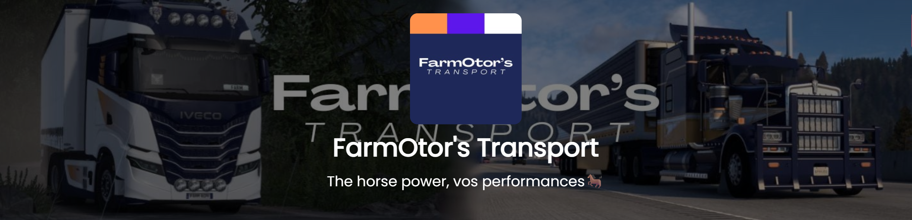
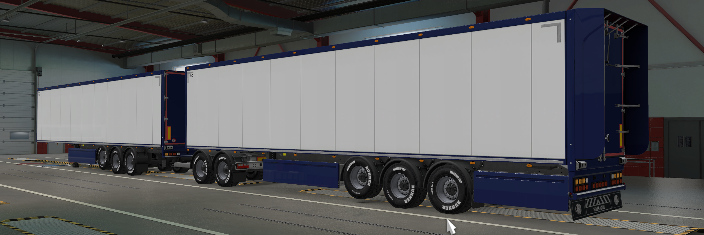
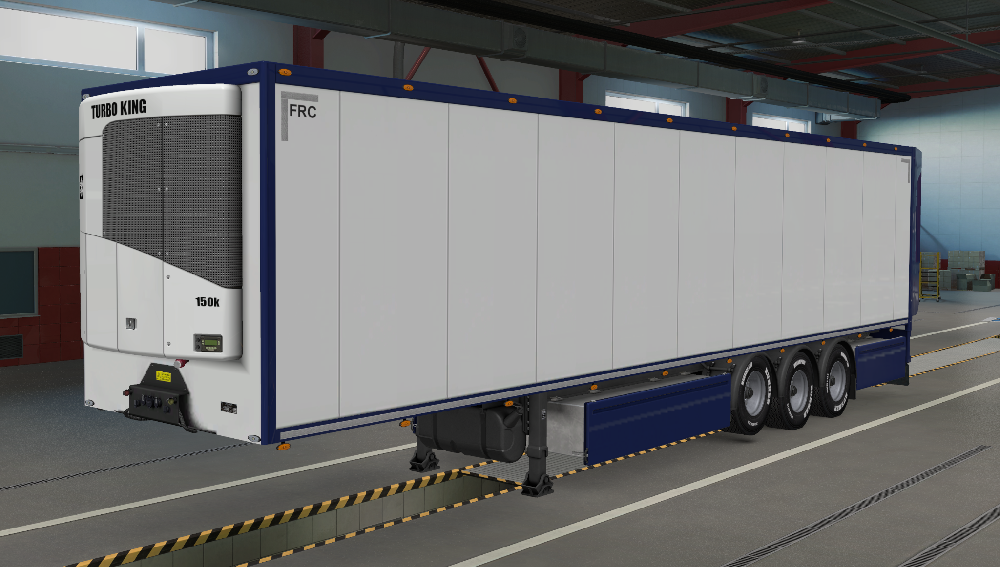
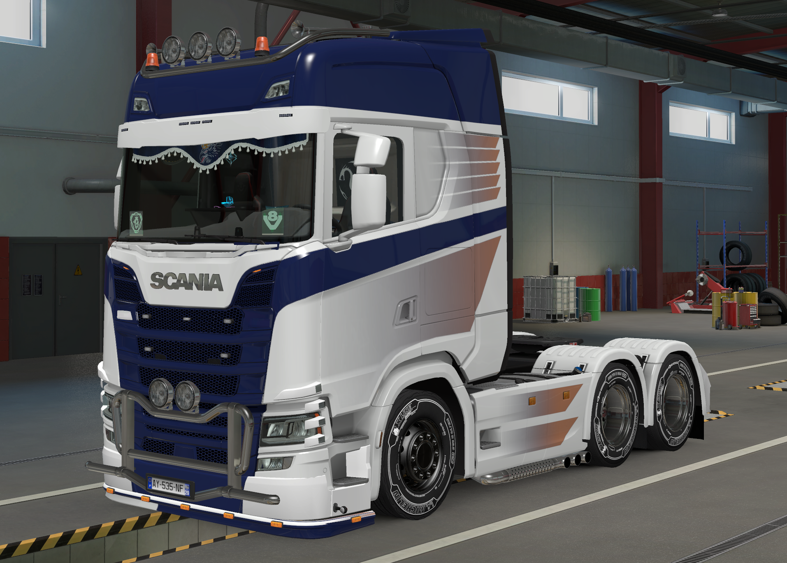
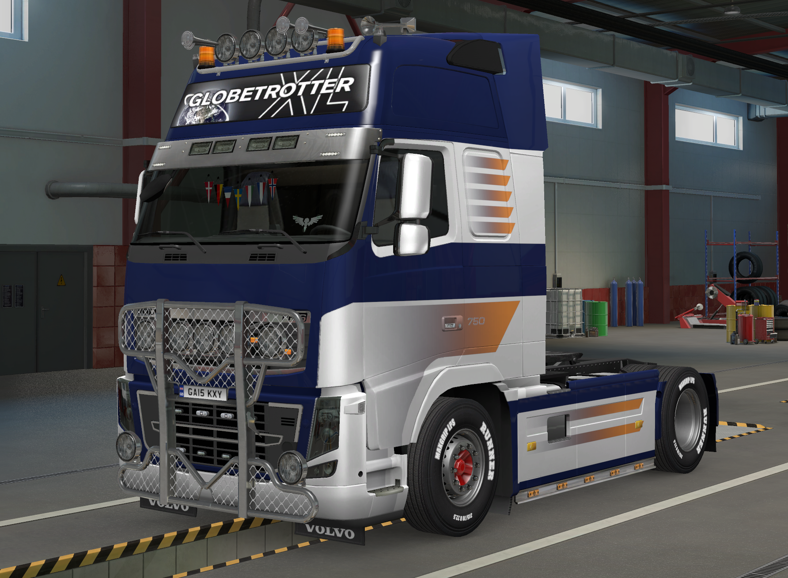

Bienvenue sur framOtor
Site modernisé et prêt pour GitHub Pages. Les images et logos d'origine ont été conservés dans assets/images/.
Ce site utilise Tailwind via CDN pour un style rapide et léger. Pour production, je recommande de compiler Tailwind pour réduire la taille du CSS.
Galerie des images (conservées)




